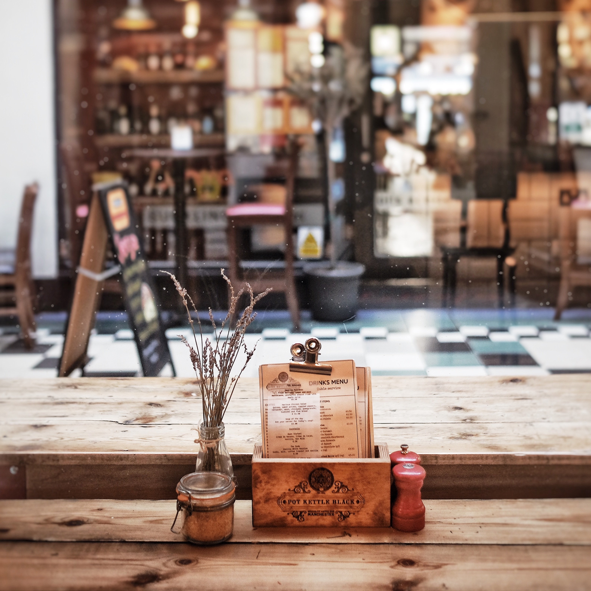

7,3/10

7,3/10
Nachos especiales con carne, guacamole, queso con chorizo
Ceviche de pescado, rajas con queso, cóctel de camarón
Cochinita pibil, tacos de arrachera, tacos gobernador
Cheesecake de mango o fresa o maracuyá con helados artesanos
Los platos arriba mencionados podrán cambiar en función del mercado y aparecen indicados a modo de ejemplo.

Carta extensa y variada, tacos muy buenos! Atencion perfecta, calidad-precio genial. Volveremos!
Comida muy buena pero nos hicieron esperar muchísimo y solo había 3 mesas... Y cuando pedimos más tortillas para acompañar la comida nos dijeron que nos las cobrarían como suplemento. Cuando llevas más de media hora entre el 1ero y el 2do, se agradece un gesto de amabilidad. Además es que te dabas cuenta de que eran conscientes que no era normal la espera. En fin, supongo que no saben mucho de hostelería. Eso sí, claramente no fue con mala intención. Y por eso, bueno y porque la comida me encantó, pienso volver. Soy partidario de que a veces necesitamos segundas oportunidades.
Servicio muy atento. Con el descuento una excelente calidad/precio.
Menús y bebidas no incluidos. Esta promoción se aplica sin consumo mínimo, ni restricciones de platos, para que comas lo que te apetezca y solamente prestes atención a disfrutar. Válida en la franja horaria seleccionada.
Estuvimos a la hora del almuerzo, en medio de fogones, ollas y cocineros apasionados por lo que hacen. Bladimir Tovar, chef encargado de la cocina, fue el guía.